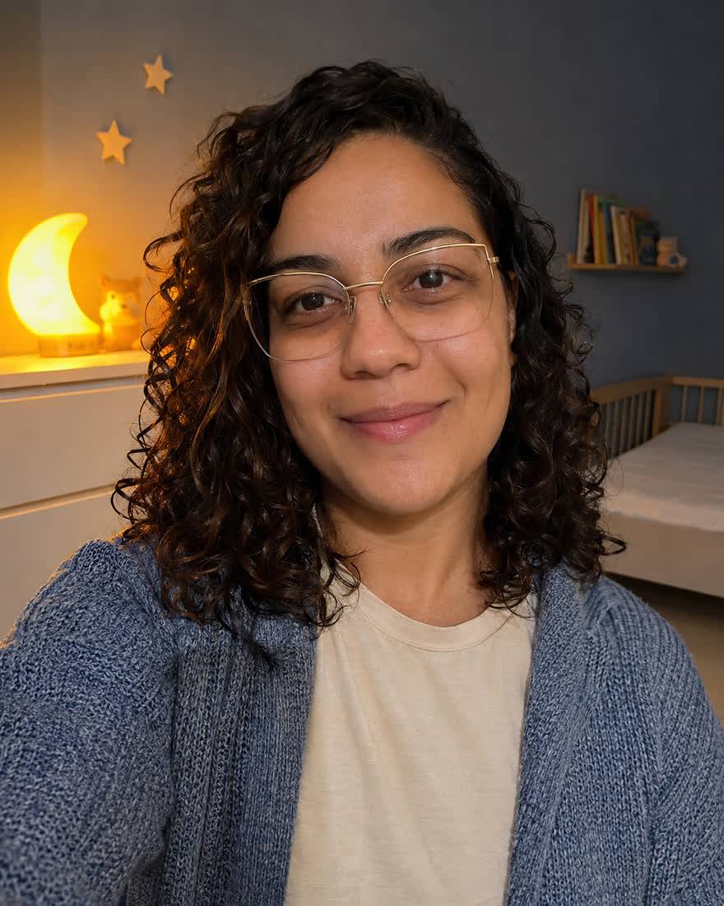
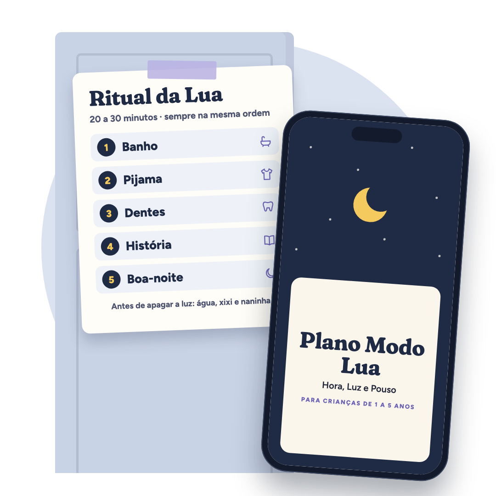

Descubra o Horário da Lua do seu filho: a hora certa de dormir para a idade dele
Responda 15 perguntas rápidas e veja se a criança está indo para a cama depois do segundo gás, e por onde começar hoje à noite.

Imagem criada com IAPara mães e pais de crianças de 1 a 5 anos. O teste é gratuito; no final você pode, se quiser, levar o Plano Modo Lua completo.
- Calculando o horário pela idade...
- Conferindo o segundo gás...
- Montando o seu Plano Modo Lua...
O seu Horário da Lua está pronto
O que o seu resultado mostra
- Idade:
- Acorda por volta das
- Hoje: pega no sono por volta das .
- O Horário da Lua dela (luz apagada) trancadoLiberado no Plano Modo Lua, logo depois da compra.
- O seu ponto de partida:
O Horário da Lua é calculado pela idade e pela hora em que ela acorda, com a tabela de horas de sono da Sociedade Brasileira de Pediatria. Não é avaliação médica.
Assista: a Helena explica o seu Horário da Lua
O vídeo não carregou agora. A oferta já está logo abaixo.
Oferta
Pagamento único · Pix ou cartão
QUERO MEU PLANO MODO LUAAcesso no seu e-mail logo após o pagamento · Garantia de 7 dias

O horário certo de dormir para a idade da criança, um ritual de 20 a 30 minutos e a saída do quarto em 4 degraus, para a hora de dormir ficar mais curta e mais calma, sem deixar chorar sozinha.
O que você recebe
- Guia Modo Lua: entenda o segundo gás e os 3 passos (Hora, Luz e Pouso), num texto curto e simples.
- O Horário da Lua dela, destrancado: a janela de luz apagada que ficou trancada no seu teste aparece logo depois da compra.
- Horário da Lua por idade: quadros prontos para 1 a 2, 2 a 3 e 3 a 5 anos, com 5 horários de acordar (de 6h a 8h): soneca, início do ritual e luz apagada. E a regra dos 15 minutos para adiantar aos poucos.
- Ritual de 20 a 30 minutos para cada idade, com cartão para imprimir e colar na porta do quarto e uma versão para o celular.
- Pouso em 4 degraus: 14 noites para você sair do quarto aos poucos, e o que fazer se ela protestar, sem deixar chorar sozinha.
- Plano da Madrugada: a resposta curta e sempre igual, com pouca luz e pouca conversa, e como levar a criança de volta para a cama dela.
- Checklist Antes do Pedido: água, xixi, naninha, luz, porta e “mais uma história” resolvidos antes de apagar a luz.
- Diário da Lua de 14 noites: para imprimir ou usar no celular e ver, noite a noite, o que está mudando.
- Sono seguro e quando procurar o pediatra: o básico do sono seguro no primeiro ano e os sinais de que vale conversar com o pediatra.
Como funciona: Modo Lua em 3 passos (Hora, Luz e Pouso)
Hora da Lua
Deitar antes do segundo gás: o horário pela idade, contando de trás para frente a partir da hora em que ela acorda. Se hoje é muito tarde, adiante 15 minutos a cada 2 ou 3 noites.
Luz da Lua
1 hora antes, telas desligadas e casa em meia-luz. Depois, um ritual de 20 a 30 minutos, sempre na mesma ordem: banho, pijama, dentes, história e boa-noite.
Pouso da Lua
Ela pega no sono na caminha dela, com você perto. E você vai saindo em 4 degraus: deitada junto, sentada ao lado, cadeira na porta, fora do quarto.
Para quem é (e para quem não é)
Para quem é
Mães e pais de crianças de 1 a 5 anos em que a hora de dormir virou uma luta.
Para quem não é
- Não é tratamento.
- Não é para bebê de menos de 1 ano.
- Não usa remédio, chá, melatonina nem suplemento.
- Não deixa a criança chorando sozinha.
Quando falar com o pediatra antes
- Ronco com pausas na respiração.
- Respiração difícil ou pela boca toda noite.
- Sono muito agitado.
- Mudança brusca no sono.
- Criança que não ganha peso.
- Qualquer dúvida sobre o desenvolvimento.
Por que é tão barato?
Porque é digital e porque toda mãe cansada merece isso sem pagar um curso caro.
Plano Modo Lua completo
Pagamento único · Pix ou cartão
QUERO MEU PLANO MODO LUASem mensalidade e sem cobrança escondida: o valor do checkout é este + a taxa de serviço da plataforma.
Garantia de 7 dias. Se não gostar, é só pedir o reembolso dentro desse prazo e você recebe o valor de volta.
Perguntas frequentes
Como eu recebo?
Assim que o pagamento é aprovado, o acesso chega no e-mail que você usar na compra. Quem envia é a Cakto, a plataforma de pagamento. No cartão é na hora; no Pix, logo depois da confirmação. Dá para abrir tudo no celular.
Serve para qual idade?
Para crianças de 1 a 5 anos. Os quadros de horário vêm em 3 faixas: 1 a 2, 2 a 3 e 3 a 5 anos. Antes de 1 ano, o mais importante é o sono seguro e a conversa com o pediatra.
Precisa deixar chorar?
Não. O Modo Lua não deixa a criança chorando sozinha. Se ela protestar, você fica perto, com a mesma frase e a voz baixa, e vai saindo do quarto aos poucos.
E se ela mama de madrugada?
O plano funciona com ou sem peito. Tirar a mamada da noite é uma conversa com o pediatra.
Em quanto tempo funciona?
Cada criança tem o seu tempo. O plano te mostra o que fazer a cada noite, e o diário mostra o que está mudando.
É assinatura?
Não. É um pagamento único de R$ 27, sem mensalidade.
E se eu não gostar?
Você tem 7 dias de garantia. Se não gostar, pede o reembolso dentro desse prazo e recebe o valor de volta.